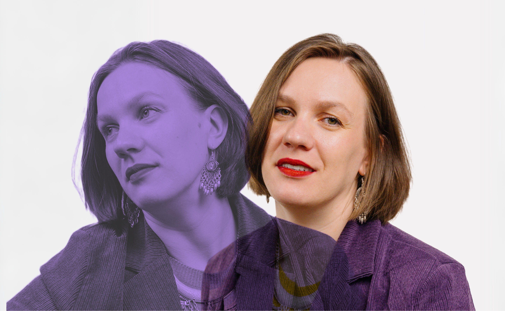
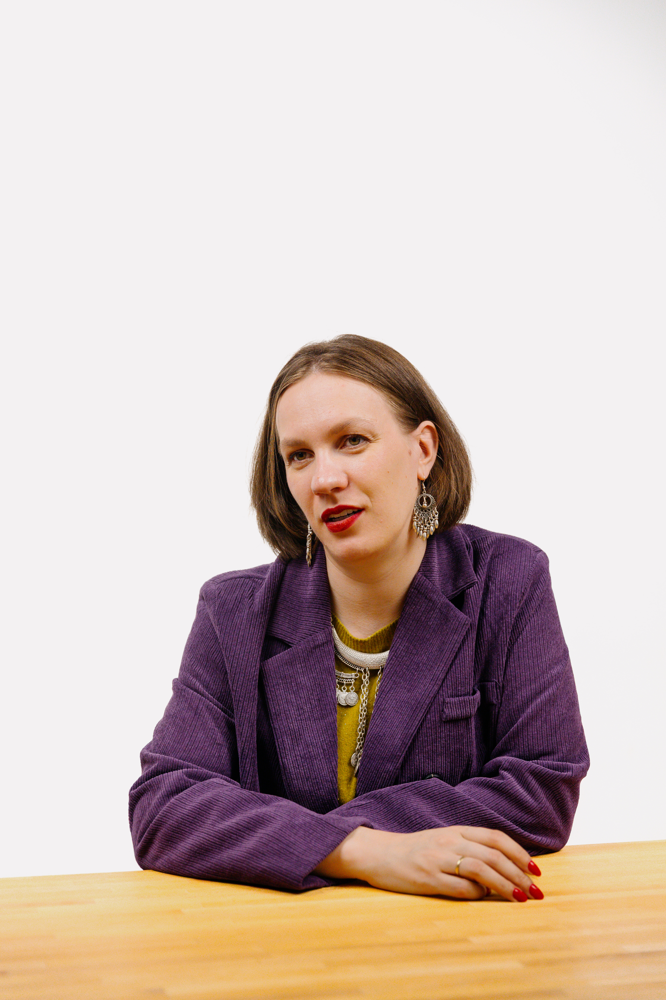
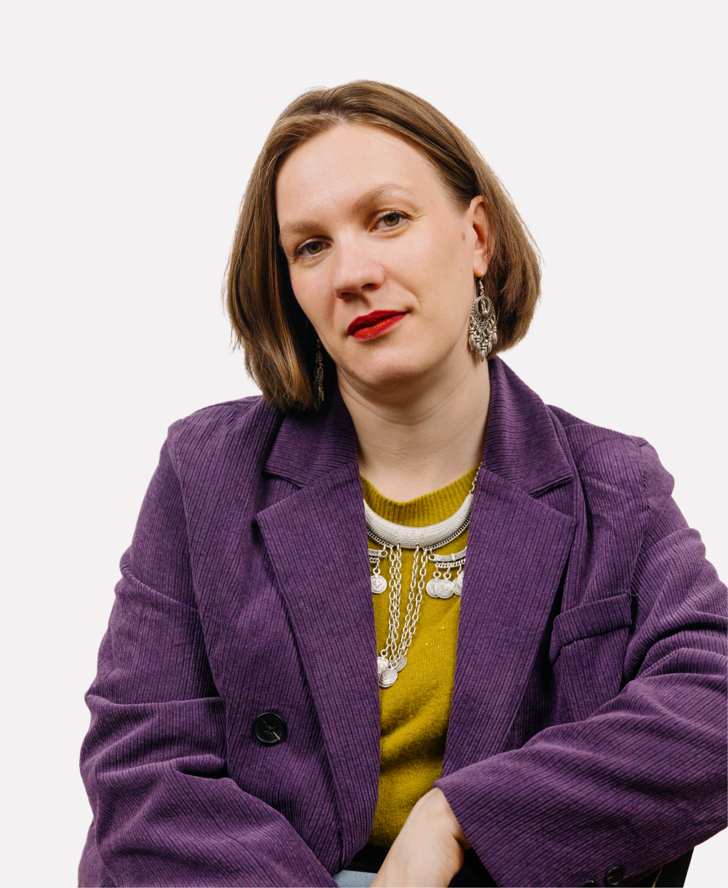
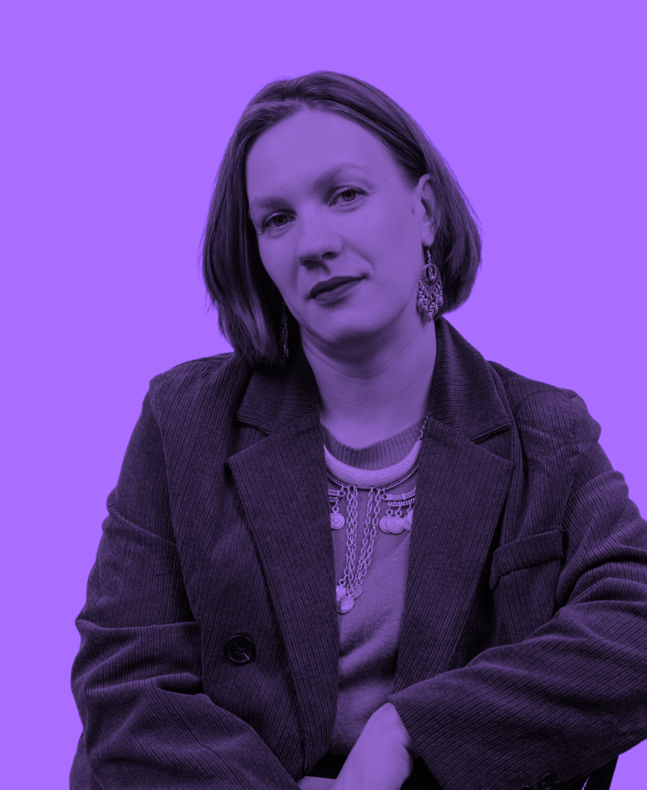

Путь фандрайзера:
из проджекта и SMM
в бизнесе —
в фандрайзинг
Согласно нашему исследованию, большинство фандрайзеров приходит в сектор из других сфер: 46% из бизнеса и ещё 18% — из государственного сектора, медицины, науки, образования или культуры. Часто этот переход связан с поиском большего смысла в работе или интересом к самим задачам фандрайзинга. Нередко этот переход оказывается не до конца осознанным: порой специалисты ничего не знают про благотворительность, но решают попробовать свои силы именно в некоммерческом секторе (39,1% опрошенных).
Мы попросили троих фандрайзеров рассказать свои истории: как они оказались в благотворительности, с какими трудностями сталкивались, но всё равно продолжали работать и почему некоторые из них со временем решили уйти из сектора и попробовать себя в чём-то новом. Это — история Анастасии Саманлыоглу.
«Важно сразу принять одну вещь: судьба мира не зависит только
от вас»
До НКО я пять лет занималась администрированием в одной компании, которая готовила школьников к выпускным экзаменам (ЕГЭ). Я отвечала за расписание, готовила контент для соцсетей и сайта, но мне не хватало смыслов, экшена: когда надо решать всё и сразу.
Первый раз в сферу благотворительности и волонтёрства я попала в 2011 году — совершенно случайно. Я поехала на один хипповский фестиваль в июне, а уже в августе увидела сообщение в группе фестиваля во «ВКонтакте»: организаторы срочно искали волонтёров, потому что после мероприятия не вывезли мусор, власти начали ругаться и пригрозили больше не давать территорию.
Почему-то я очень быстро откликнулась на этот призыв. Просто решила поехать и помочь. В итоге две недели собирала мусор. С этого всё и началось.
После этой поездки я осталась в той самой эколого-волонтёрской тусовке. Постепенно там появлялись новые знакомые, связи, проекты. Параллельно у меня самой появилась большой семья — я стала многодетной мамой — и благодаря своему кругу общения я попала в НКО, которое занималось поддержкой многодетных семей.
Сначала я пришла туда как волонтёр. Хотя, по сути, и сама относилась к той самой целевой аудитории. Мне понравилась атмосфера: фестивали, забеги, мероприятия, ощущение, что ты можешь помочь — разгрузить, организовать, поддержать.
Потом я стала волонтёром в Банке еды «Русь». И именно там произошёл переход от волонтёрства к работе: сначала я была помощником, потом занялась SMM, постепенно росла внутри команды. Позже я решила сменить фокус и больше работать с проектами, связанными с помощью детям — хотелось больше смысла в том, что я делаю. А потом случился ещё один неожиданный поворот. В одном из фондов — «Настенька» — во мне из SMM-специалиста разглядели фандрайзера. Мне буквально сказали: такие таланты не должны пропадать зря, давай попробуем. Я согласилась попробовать — и так начала работать уже непосредственно с фандрайзингом.

Самым сложным на старте оказался объём работы. Когда приходишь в НКО, очень быстро понимаешь: ты хватаешься буквально за всё. Особенно в небольших организациях нет чёткого разделения ролей, нет строгой структуры — и ты постепенно оказываешься человеком, который делает сразу много разных вещей.
К тому же границы работы довольно быстро размываются. Ты понимаешь, что фактически находишься на связи 24/7, и постоянно ощущаешь ответственность за происходящее.
Есть и другой момент, который многих удивляет. Когда приходишь в НКО, кажется, что будешь спасать мир. А потом выясняется, что значительная часть работы — это бумаги, таблицы, письма и отчёты. Иногда ты не спасаешь мир, а просто составляешь ведомости на раздачу помощи для сотен людей или пишешь письма, на которые никто не отвечает.
Это было, наверное, одно из первых разочарований.
Ещё один сложный момент — кризис смыслов. Мне кажется, через это проходят почти все, кто работает в НКО. В какой-то момент понимаешь, что невозможно помочь всем. Даже если сегодня ты помог всем подопечным, завтра появятся новые. Даже если ты привёз еду всем одиноким бабушкам в этом месяце, в следующем нужно будет делать то же самое снова.
И эта бесконечность иногда сильно давит.
Бывает и другое испытание — работа с людьми. Иногда приходится помогать тем, кто тебе лично неприятен. И тогда приходится бороться со своими внутренними эмоциями и осуждением.
Справляться с такими кризисами мне помогали простые вещи: терапия, разговоры с коллегами, саморефлексия. Очень важно иметь рядом людей, которые понимают, через что ты проходишь.
Но не менее важно — просто жить свою жизнь. Отдыхать, проводить время с семьёй, заниматься чем-то кроме работы. У меня есть дети, свои увлечения, и всё это очень помогает держать баланс. Если говорить о совете тем, кто только приходит в НКО, он у меня довольно простой.
Важно сразу принять одну вещь: судьба мира не зависит только от вас. Если помнить об этом, будет меньше разочарования и выгорания.


Очень важно беречь своё здоровье — и физическое, и ментальное. Иногда кажется, что главное — это благополучатели. Но на самом деле самый главный благополучатель сотрудника НКО — это он сам. Если ты выгорел, ты не сможешь помогать другим.
Поэтому нужно давать себе выходные, отпуск, не бояться брать больничные и выстраивать рабочие процессы так, чтобы можно было действительно отключиться от работы.
Что касается разговоров о том, что люди уходят из третьего сектора, мне кажется, сейчас вообще всех немного штормит. Рынок труда нестабильный, многие ищут варианты получше, так что сложно кого-то за это осуждать.
Кроме того, у НКО сейчас непростое время. У бизнеса и у людей стало меньше денег, поэтому и пожертвований может становиться меньше. В какой-то момент ты начинаешь чувствовать давление: работаешь столько же или даже больше, а результат в цифрах меньше. Это тоже может приводить к кризису смыслов.
Но мой главный совет тем, кто устал или разочаровался, — отдыхать и поддерживать себя. Понимать, что сложные периоды проходят.
И, если честно, мне всё-таки хочется сказать: не уходите из третьего сектора. Хорошие специалисты здесь всегда очень нужны».

К чему все эти разговоры,
смотрите в исследовании
фандрайзеров и их нанимателей